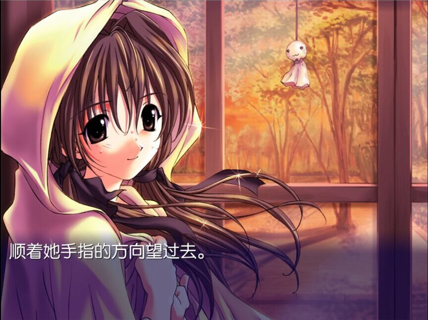
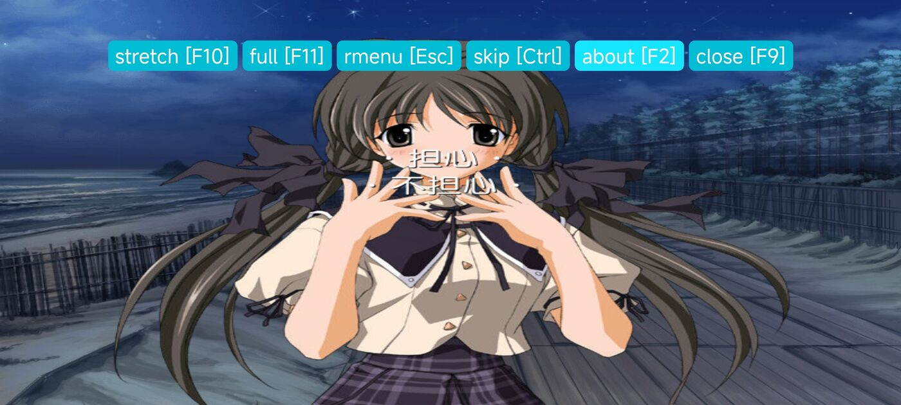
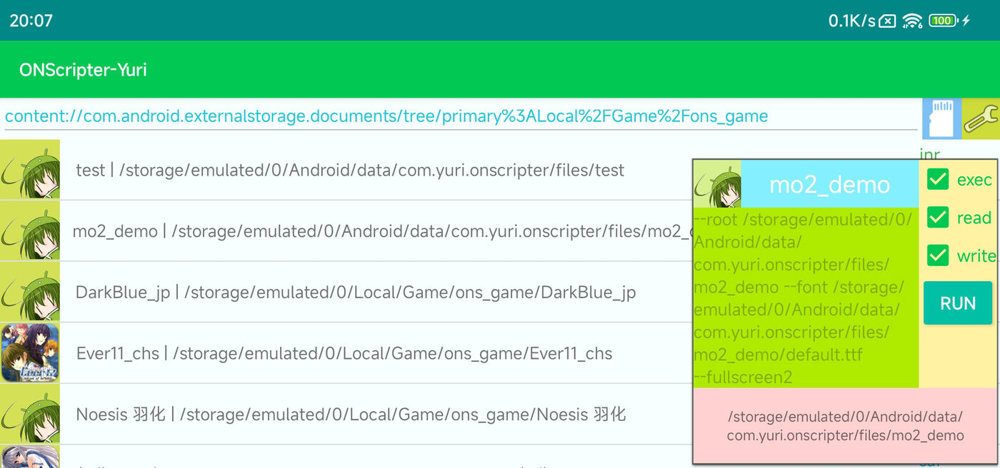

Read Japanese. Play visual novels. In the browser.
Three open-source projects that fit together. chimimouryou is a self-hosted reader for your Calibre library. CONscripter is the visual novel engine it uses to play games in the browser. conscripter-convert turns games made with other engines into games CONscripter can play.
Every page CONscripter draws in chimimouryou hands its text, and where each character landed, to the web page. That is what lets you look words up with Yomitan and count what you read in your reading statistics.
chimimouryou
A self-hosted Japanese e-book reader for your Calibre library. It is a fork of ッツ Ebook Reader that runs on your own server, so everyone in the house reads from one library with their own account, synced progress and highlights, plus tools for language learners.


C:\> git clone https://github.com/blankiekun/chimimouryou C:\> cd chimimouryou && cp .env.example .env C:\CHIMIM~1> docker compose up -d C:\CHIMIM~1> docker compose exec account ebook-account initial-admin
conscripter-convert
Converts Japanese visual novels you own into games that run on CONscripter, including its WebAssembly build.
It reads a game's archives, images, audio and compiled scripts, translates them into an engine-neutral
intermediate form, and writes a 0.txt script plus .nsa archives.
It ships no game data and reads only your own installation.
C:\> conscripter-convert convert-game D:\SAIHATE -o out\imaa --font ipag.ttf --title "最果てのイマ" Reading archives ........ ok Decompiling scripts ..... ok Writing 0.txt, arc.nsa .. ok C:\> conscripter --root out\imaa
| Xuse feature | Status |
|---|---|
| Archives, images, BGM, sound effects, voices | Decoded |
| Script text, speaker names, hyperlinks | Converted |
| Control flow: variables, goto, gosub/return | Converted |
| Transitions with original durations | Converted |
| Evening and night character tints | Pre-rendered |
| Title, save/load, settings, backlog menus | Built in-script |
| Movies | Not yet |
| Special text displays, ~35 rarer opcodes | Not yet |
CONscripter
An ONScripter engine for playing NScripter visual novels on the web, Windows, Linux, macOS, Android and RetroArch. It is a fork of ONScripter-Yuri, built on SDL2, and the engine behind chimimouryou's visual novel player and conscripter-convert's output.



| Platform | Builds |
|---|---|
| Web | WebAssembly, saves in IndexedDB |
| Windows | x86, x64, ARM64 |
| Linux | x86, x64, arm, aarch64 |
| macOS | x64, arm64 |
| Android | 5.1 and later |
| RetroArch | libretro core |
Click a button on the taskbar to open a window.